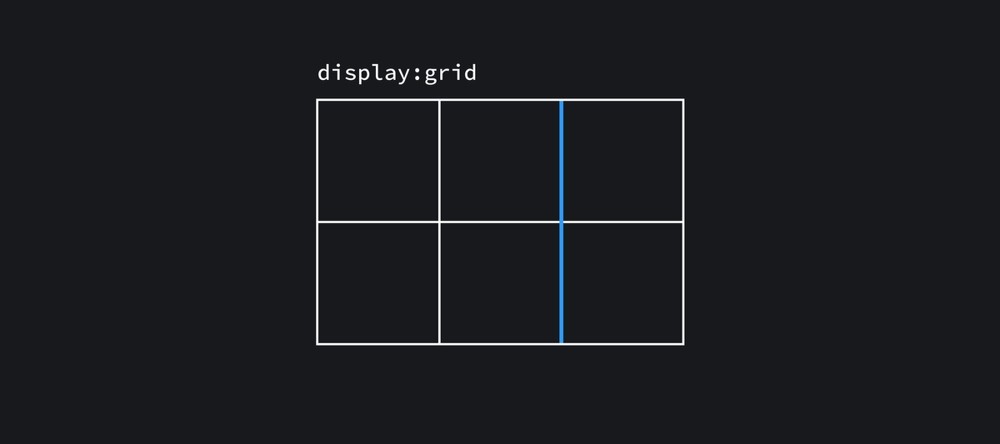
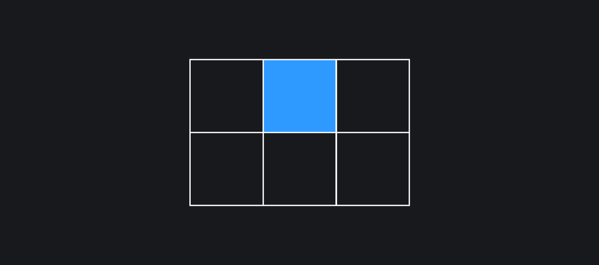
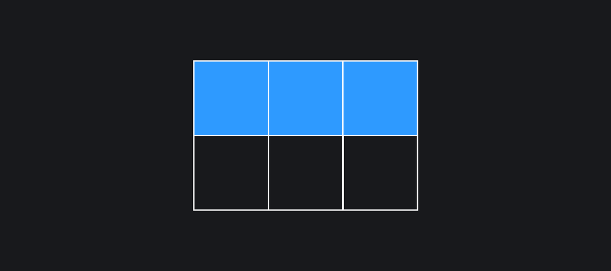
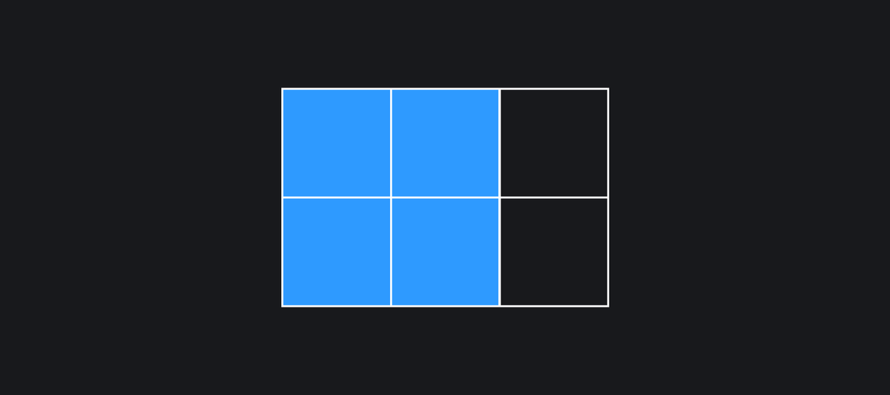
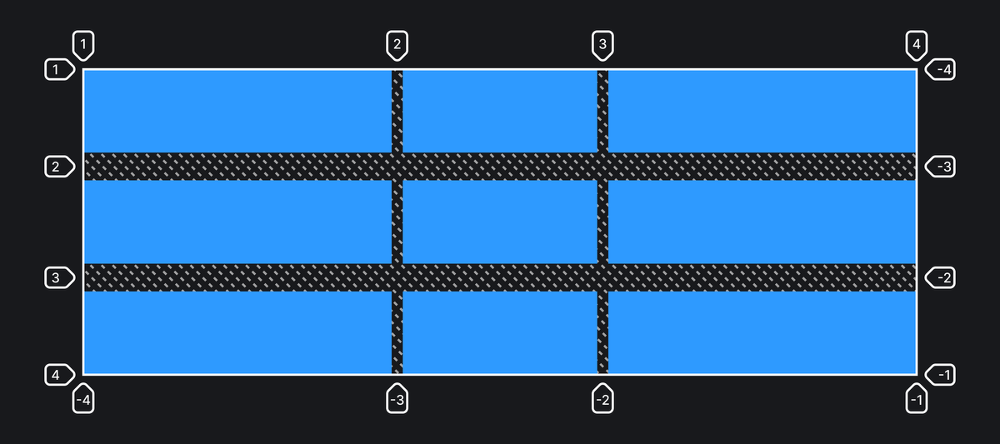

Alina Cherkasova
It is a two-dimensional grid system for CSS, optimized for creating complex user interfaces and page layouts.
Grids give you the ability to work in two dimensions simultaneously: horizontal and vertical
Grid is designed specifically to solve these problems!
Grid is needed to create structured and adaptive web page layouts.
A grid container is a parent element to which the 'display: grid' or 'display: inline-grid' property is applied.
A grid-element is a child element, a direct descendant of a grid-container.
1
2
.grid-container {
display: grid; /* Makes an element as a grid container */
}
.grid-item { /* It's a grid item */ }
A dividing line forming the grid structure. It is located on both sides of a column or row. It is used for binding grid elements.
The space between neighboring grid-lines.
The space between two neighboring grid-lines.
An area bounded by four grid-lines. It can consist of any number of cells both horizontally and vertically.

.container {
display: grid;
}
If an element is given the “display: grid” property, such an element becomes a grid container. The child elements of this container start obeying the grid layout rules. From the outside, a grid container behaves like a block.
.container {
display: inline-grid
}
An element with the “display: inline-grid” property behaves almost similarly, except that from the outside the grid-container will behave like a line element.
Properties that specify the size and number of columns or rows of the grid layout
.container {
display: grid;
/* Will be created 3 columns */
grid-template-columns: 150px auto 40%;
/* Will be created 3 rows */
grid-template-rows: 250px 10vw 15rem;
}
If you need columns or rows of the same size, you can use the repeat() function.
.container {
display: grid;
grid-template-columns: repeat(3, 250px);
/* equels grid-template-columns: 250px 250px 250px; */
}
In cases where the number of columns or rows is not known for the grid-template-columns and grid-template-rows properties, you can use this properties.
.container {
grid-template-columns: repeat(/* auto-fill / auto-fit */, 250px);
}
So what's the difference?
Both settings automatically add columns to the grid-template.
Allows you to specify a grid pattern for the arrangement of elements within a grid container.
The names of the areas are specified using the grid-area property. The current grid-template-areas property simply indicates where these grid areas should be located.
Possible values:
Important! It is necessary to name each of the cells.
.container {
display: grid;
grid-template-columns: repeat(3, 500px);
grid-template-rows: repeat(2, 1fr);
grid-template-areas:
"header header header"
". content content"
}
.item1 {
grid-area: header;
}
.item2 {
grid-area: content;
}
.container {
display: grid;
grid-template-columns: 1fr 350px 1fr;
grid-template-rows: repeat(3, 150px);
/* Row spacing */
row-gap: 50px;
/* Column spacing */
column-gap: 20px;
}
.container {
display: grid;
grid-template-columns: 1fr 350px 1fr;
grid-template-rows: repeat(3, 150px);
gap: 50px 20px;
}

Properties for horizontal and vertical alignment of elements
Their values and behavior are similar to those of the flexbox properties
.container {
display: grid;
place-items: stretch end;
}
Shortcut to specify values for both align-items and justify-items at once.
It is important to specify properties in this order.
A megashortcut that allows you to specify values for everything at once. You can use it to specify values for properties:
Before using everything in one property, think about the readability of the code!
These properties, aligns the individual element on the horizontal and vertical axis
Property values and behavior is similar to flexbox
Shortcut for specifying values to the justify-self and align-self properties at the same time
Possible values:
Determine the position of an element within the grid container by pointing to specific guide lines.
Possible values:
.container {
display: grid;
grid-template-columns: [one] 1fr [two] 1fr [three] 1fr [four] 1fr [five] 1fr [six];
grid-template-rows: [row1-start] 1fr [row1-end] 1fr 1fr;
}
.item1 {
grid-column-start: 2;
grid-column-end: five;
grid-row-start: row1-start;
grid-row-end: 3;
}
Shortcut properties for grid-column-start, grid-column-end and grid-row-start, grid-row-end respectively.
Values for *-start and *-end are separated by a slash
.item1 {
grid-column: 3 / span 2;
grid-row: 3 / 4;
}
A duplicitous property
.item1 {
/* Takes up the content area inside the grid container */
grid-area: content;
}
.item1 {
/* values are listed in this order
row-start / column-start / row-end / column-end */
grid-area: 1 / col4-start / last-line / 6;
}